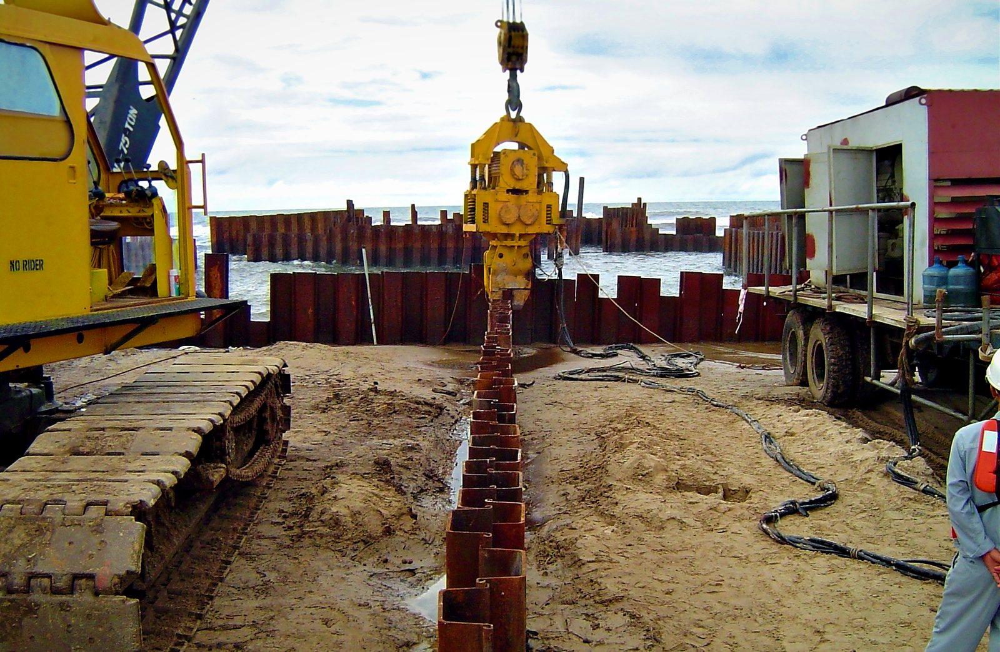
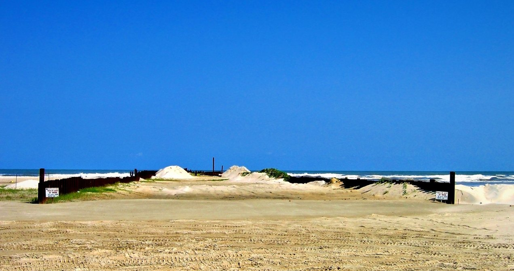
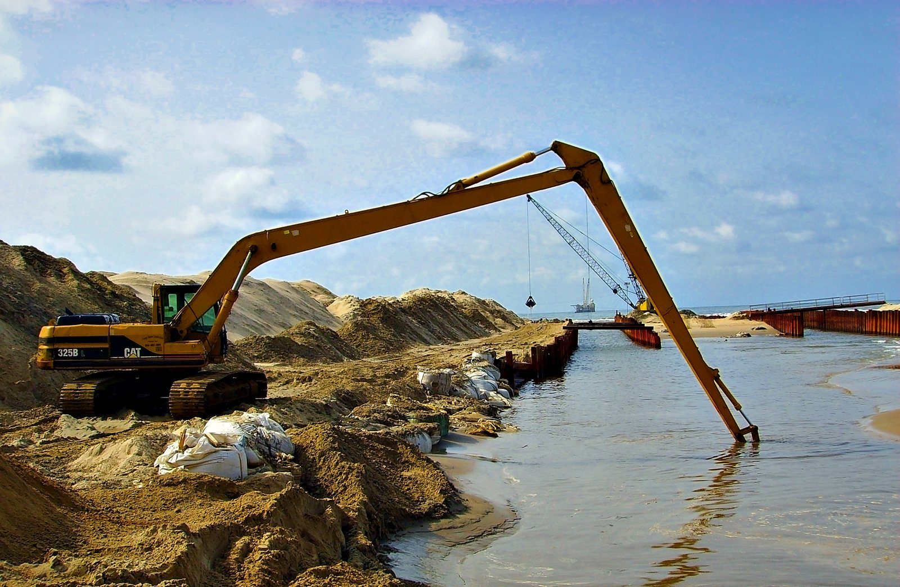
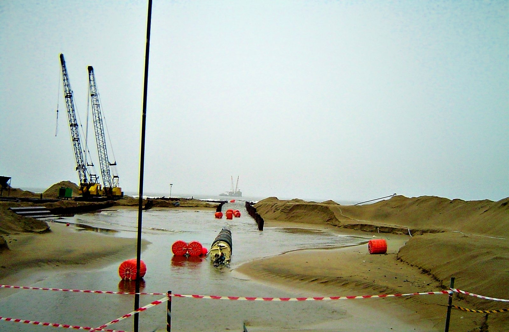
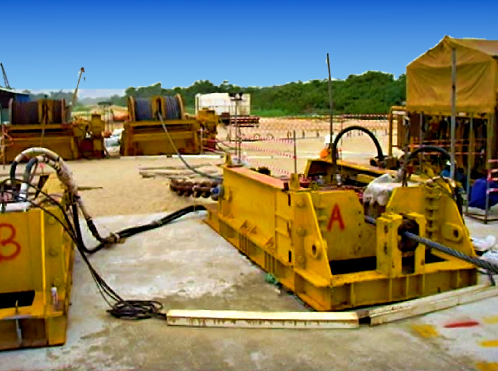
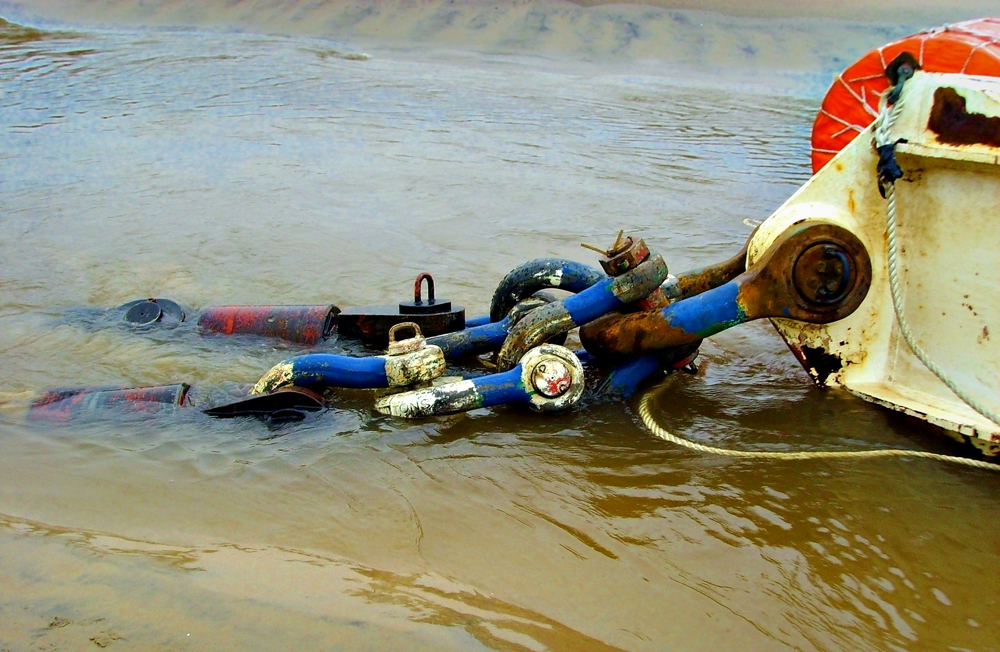

Shore Approach
Connecting offshore and onshore pipelines through the coastline.
Overview
Landfalls built for the conditions
Shore approaches are among the most demanding parts of a pipeline. We choose the method to suit the seabed, the shoreline and the environmental limits.
- Open-cut trenching through beach and surf zone
- Sheet-pile cofferdams and pre-trenching
- Horizontal directional drilling (HDD) landfalls with trusted specialist partners
- Pipe pull-in from lay vessel or onshore winch
- Backfill, rock armor and shoreline reinstatement

In the Field
Landfall construction







